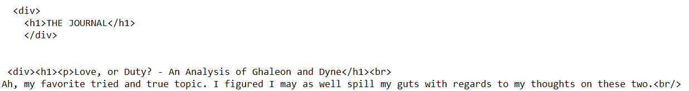

THE JOURNAL
02-01-2021
I've been taking ADHD meds for the past few days and have been feeling great. Sadly, great things never last.
My retainer broke. Essentially; I wear a retainer with two fake teeth on it, to hold open a gap and pretend I have those teeth still until I get implants.
The teeth broke off of it, and now there's a sharp piece of plastic right in tongue-touching range. Not fun! My mood dipped pretty bad last night because of it.
In brighter news, I'm currently working on my first non-personal blog entry. What is it, you might be wondering?

As expected, it's a long-winded journal entry on how in love Ghaleon and Dyne are.
They mean a lot to me from many perspectives and I'm excited to share my thoughts.
Additionally, I'm putting more work into To Time's End. Also very excited to share that, though I might change the format it's in if I can't find many voice actors for it.
I've started uploading character bios to this site, too: Aera, Luca, and Leena!
I've figured out my plan for the right sidebar, as well. It'll feature links to non-personal blog entries, like the above mentioned Ghaleon/Dyne entry!
I'm really happy with this site so far and can't wait to keep growing it.